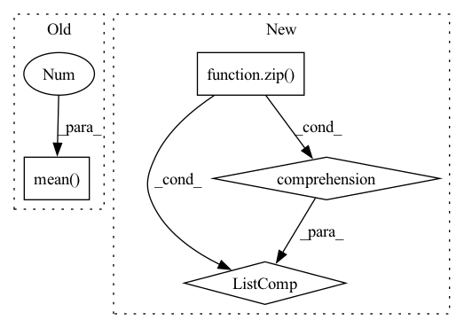

Pattern ID :21708

Before Change
if len(metrics):
precision, recall, average_precision, f1, ap_class = ap_per_class(*metrics)
if self.iou_thres.is_range():
precision, recall, average_precision, f1 = precision[:, 0], recall[:, 0], average_precision.mean(
1), average_precision[:, 0]
mean_precision, mean_recall, mean_ap, mf1 = precision.mean(), recall.mean(), average_precision.mean(), f1.mean()
After Change
accumulated_matching_info = getattr(self, "matching_info")
if len(accumulated_matching_info):
matching_info_tensors = [torch.cat(x, 0) for x in list(zip(*accumulated_matching_info))]
// shape (n_class, nb_iou_thresh)
ap, precision, recall, f1, unique_classes = compute_detection_metrics(
*matching_info_tensors, recall_thresholds=self.recall_thresholds, score_threshold=self.score_threshold,
In pattern: SUPERPATTERN
Frequency: 3
Non-data size: 4
Instances
Fragment ID: 69378759
Project Name: deci-ai/super-gradients
Commit Name: 90fb0a6d0e7aa883b1f583c9c83b4c2d3525e9d2
Time: 2022-07-28
Author: 80472096+shaydeci@users.noreply.github.com
File Name: src/super_gradients/training/metrics/detection_metrics.py
M Class Name: DetectionMetrics
N Class Name: DetectionMetrics
M Method Name: compute(1)
N Method Name: compute(1)
M Parent Class: Metric
N Parent Class: Metric
M File Name: src/super_gradients/training/metrics/detection_metrics.py
N File Name: src/super_gradients/training/metrics/detection_metrics.py
M Start Line: 154
M End Line: 165
N Start Line: 99
N End Line: 116
'>
Before Change
elif layer > self.layers:
raise ValueError(f"Number of layers specified ({layer}) exceed layers in model ({self.layers})!")
representations1 = hidden_states[torch.arange(num_inputs)[:, None], query_idx1].mean(1)
representations2 = hidden_states[torch.arange(num_inputs)[:, None], query_idx2].mean(1)
else:
representations1 = list(map(lambda x: x[torch.arange(num_inputs)[:, None], query_idx1].mean(1), hidden_states))
representations2 = list(map(lambda x: x[torch.arange(num_inputs)[:, None], query_idx2].mean(1), hidden_states))
After Change
layer = self.layers
elif layer > self.layers:
raise ValueError(f"Number of layers specified ({layer}) exceed layers in model ({self.layers})!")
representations1 = torch.stack([hs.squeeze()[idx[0]:idx[1]].mean(0) for hs, idx in zip(hidden_states.split([1] * num_inputs), query_idx1)])
representations2 = torch.stack([hs.squeeze()[idx[0]:idx[1]].mean(0) for hs, idx in zip(hidden_states.split([1] * num_inputs), query_idx2)])
else:
representations1 = list(map(lambda x: torch.stack([hs.squeeze()[idx[0]:idx[1]].mean(0) for hs, idx in zip(x.split([1] * num_inputs), query_idx1)]), hidden_states))
'>
Fragment ID: 69378762
Project Name: kanishkamisra/minicons
Commit Name: b9f76e2dfc167677a5e1a4877b8bc76799a01974
Time: 2021-08-21
Author: menogetusername@gmail.com
File Name: minicons/cwe.py
M Class Name: CWE
N Class Name: CWE
M Method Name: extract_paired_representations(3)
N Method Name: extract_paired_representations(3)
M Parent Class: object
N Parent Class: object
M File Name: minicons/cwe.py
N File Name: minicons/cwe.py
M Start Line: 151
M End Line: 170
N Start Line: 151
N End Line: 170
'>
Before Change
layer = self.layers
elif layer > self.layers:
raise ValueError(f"Number of layers specified ({layer}) exceed layers in model ({self.layers})!")
representations = hidden_states[torch.arange(num_inputs)[:, None], query_idx].mean(1)
else:
representations = list(map(lambda x: x[torch.arange(num_inputs)[:, None], query_idx].mean(1), hidden_states))
return representations
After Change
elif layer > self.layers:
raise ValueError(f"Number of layers specified ({layer}) exceed layers in model ({self.layers})!")
// representations = hidden_states[torch.arange(num_inputs)[:, None], query_idx].mean(1)
representations = torch.stack([hs.squeeze()[idx[0]:idx[1]].mean(0) for hs, idx in zip(hidden_states.split([1] * num_inputs), query_idx)])
return representations
'>
Fragment ID: 69378760
Project Name: kanishkamisra/minicons
Commit Name: b9f76e2dfc167677a5e1a4877b8bc76799a01974
Time: 2021-08-21
Author: menogetusername@gmail.com
File Name: minicons/cwe.py
M Class Name: CWE
N Class Name: CWE
M Method Name: extract_representation(3)
N Method Name: extract_representation(3)
M Parent Class: object
N Parent Class: object
M File Name: minicons/cwe.py
N File Name: minicons/cwe.py
M Start Line: 109
M End Line: 132
N Start Line: 110
N End Line: 132